ANDROID
Android
- Chrome에서 마이서브노트에 접속합니다.
- 주소창 오른쪽의 더보기(⋮)를 누릅니다.
- 홈 화면에 추가 → 설치를 선택합니다.
- 화면 안내에 따라 설치를 완료합니다.
빈 과목으로 직접 시작하거나, 문서·Excel·Anki 자료를 가져올 수 있습니다.

파일을 직접 불러오거나 법제처 검색을 이용할 수 있습니다. 여러 문서를 한 과목의 자료로 묶어 분석할 수도 있습니다.
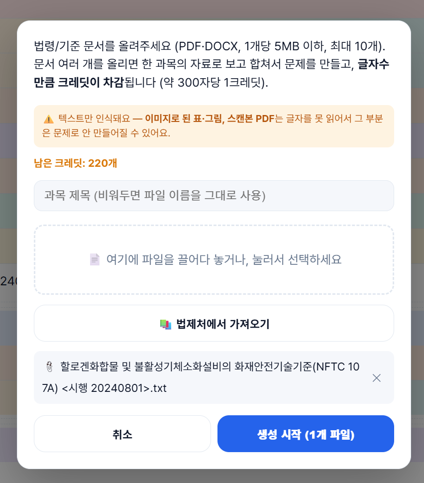
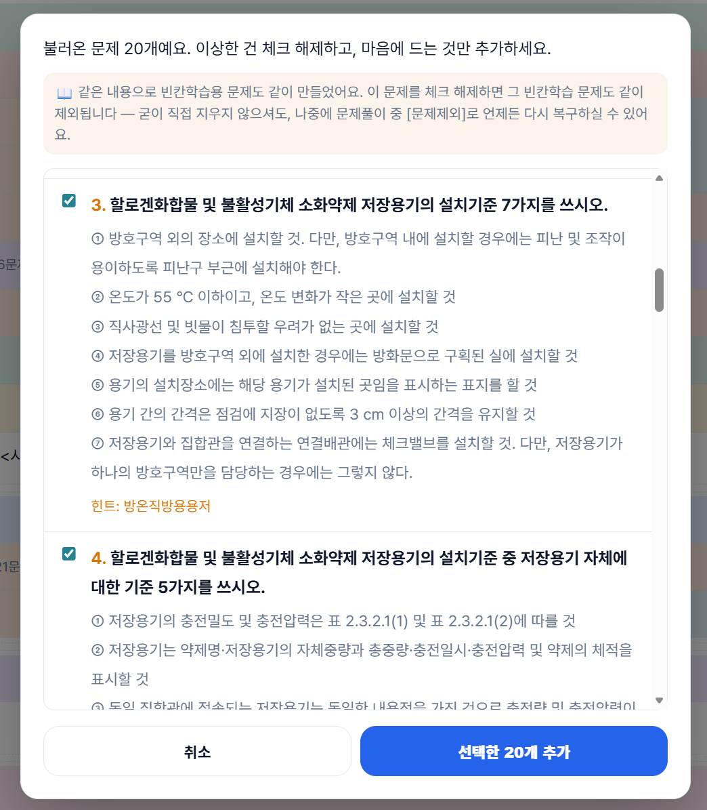
문제를 보고 정답을 직접 써보는 출력 학습입니다. 필요할 때 AI 채점으로 맞은 부분·빠뜨린 부분·틀린 부분을 확인할 수 있습니다.
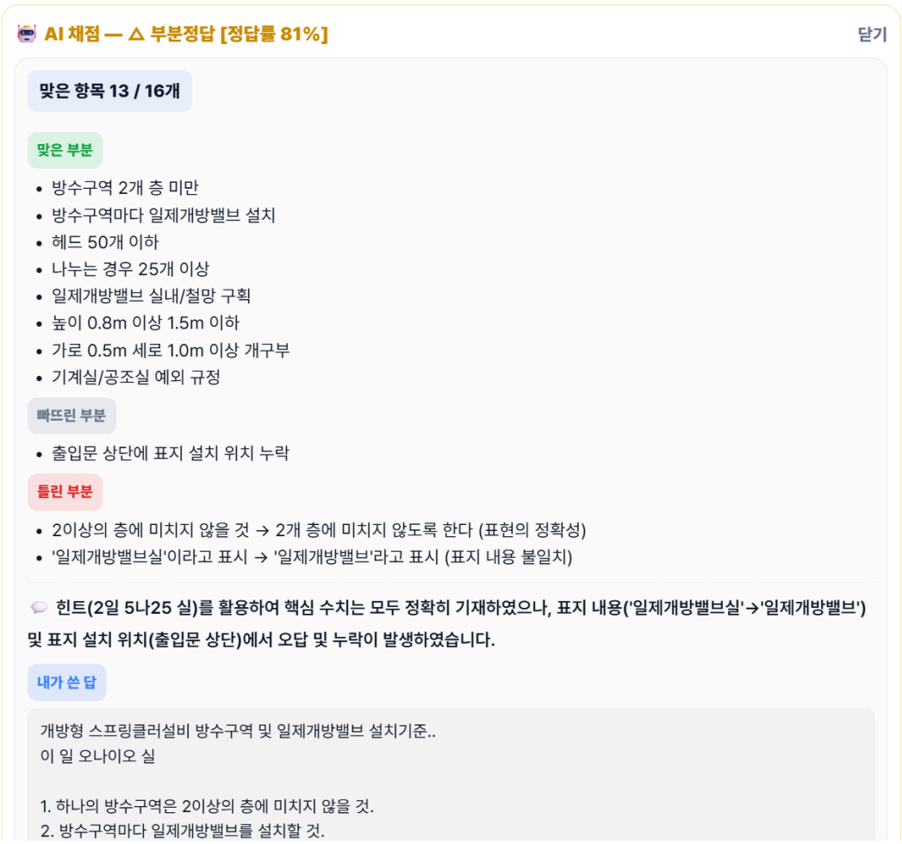
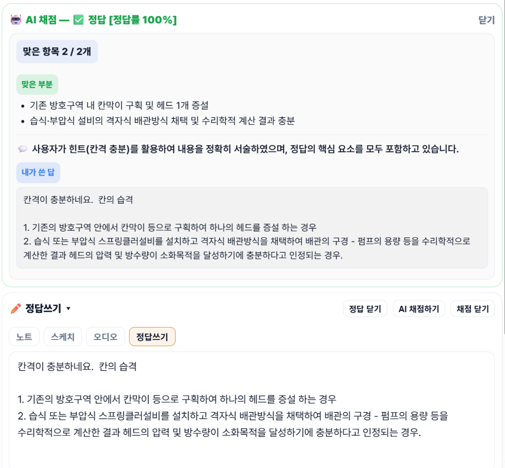
목록형에서는 여러 문제와 힌트를 빠르게 훑고 필요한 정답을 확인할 수 있습니다. 카드형에서는 한 문제씩 크게 띄워 집중해서 반복하며, 오디오를 함께 재생해 이동·운동 중 자투리 시간에도 학습을 이어갈 수 있습니다.
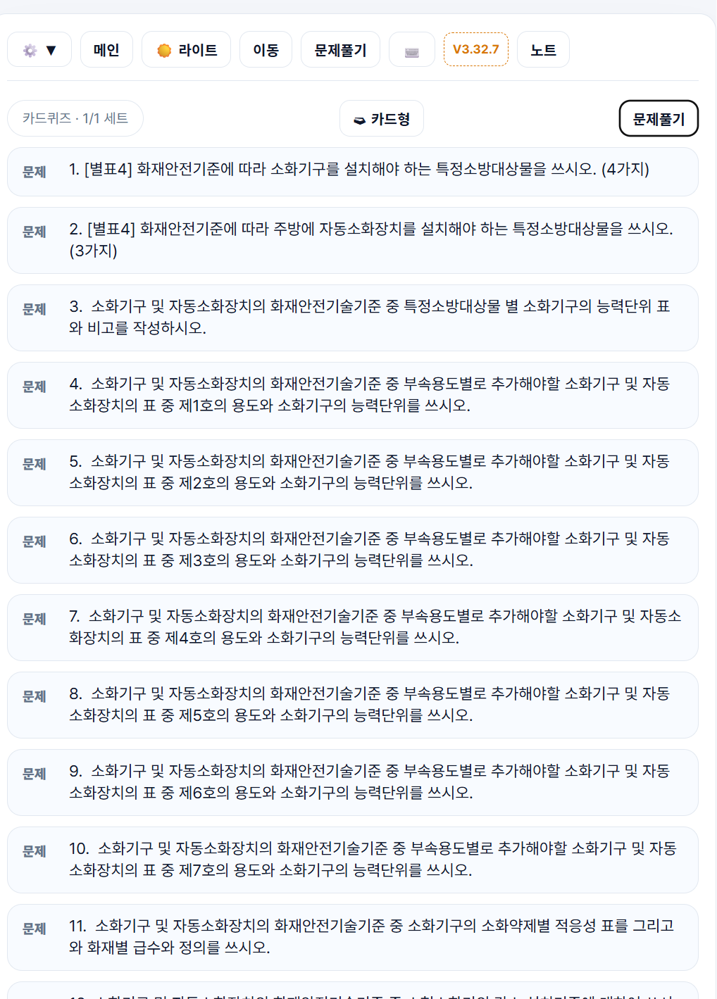
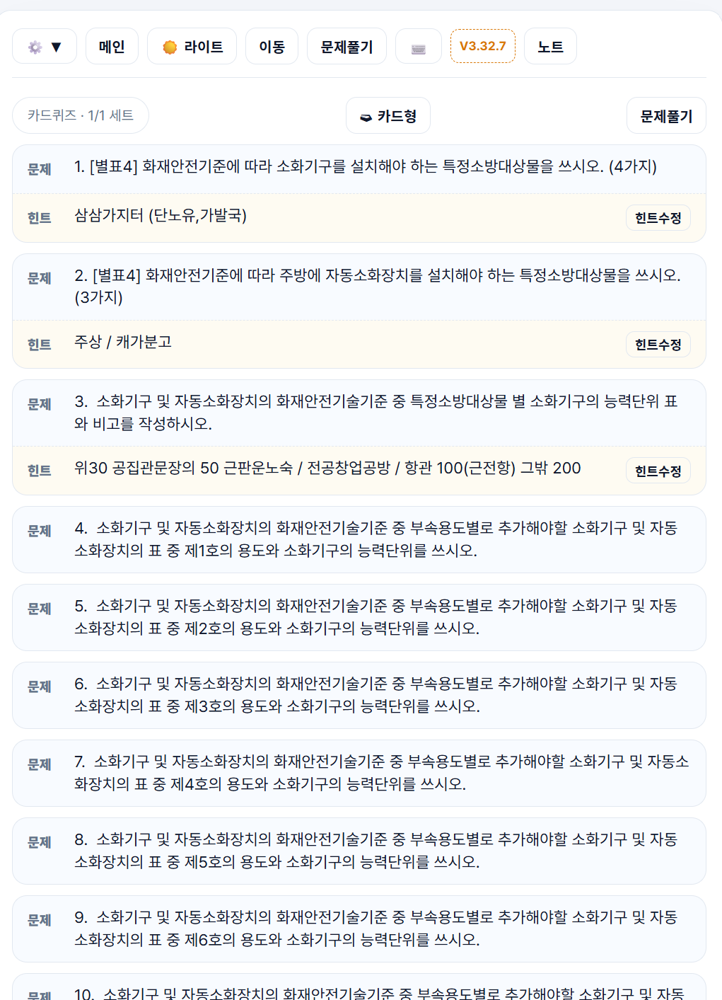
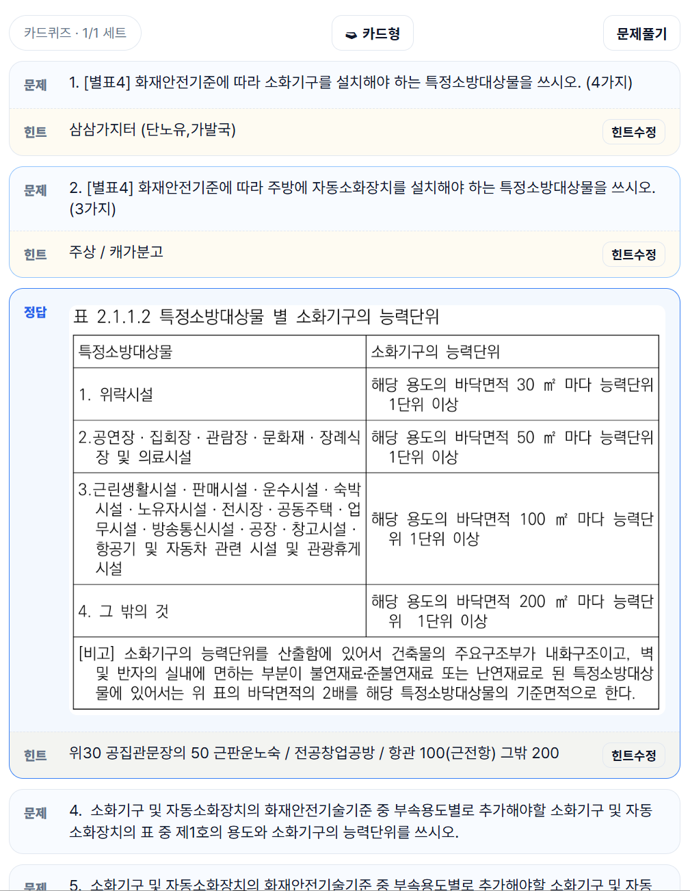
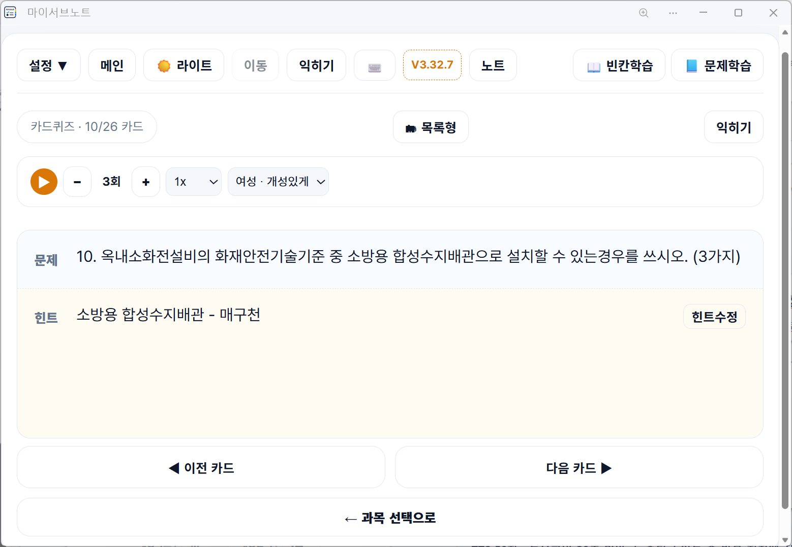
전체 답안을 쓰기 부담스러울 때 핵심어부터 꺼내봅니다. AI로 만든 과목은 빈칸학습도 함께 생성되며, 원하는 위치로 직접 수정할 수 있습니다.
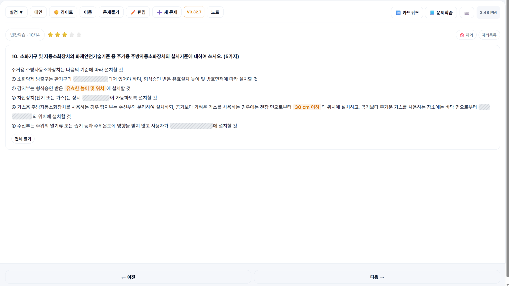
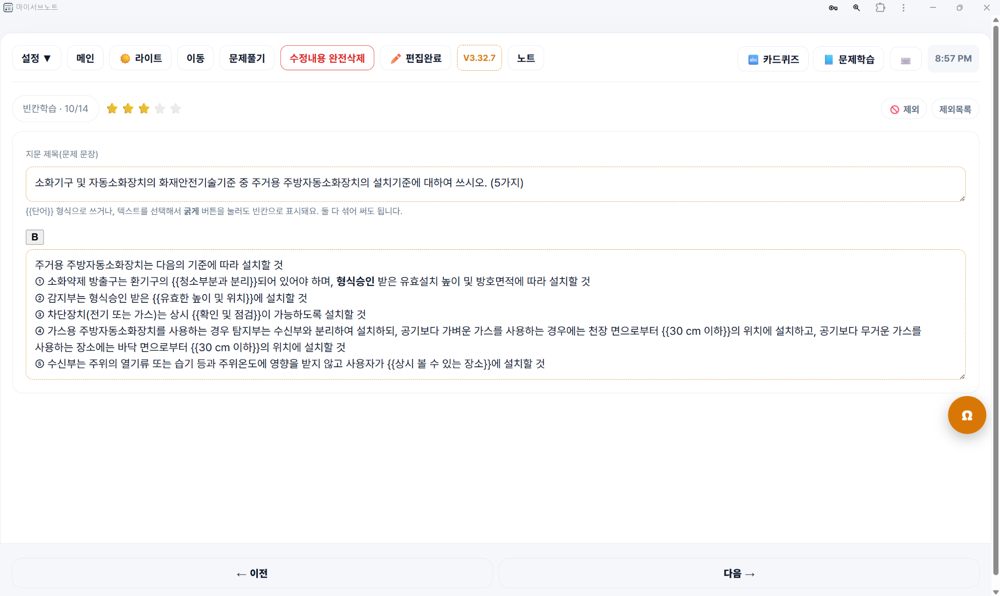
직접 녹음한 파일을 불러오거나 TTS로 암기 문장을 만들 수 있습니다. 문제와 힌트를 떠올리며 이동·운동 중에도 반복할 수 있습니다.
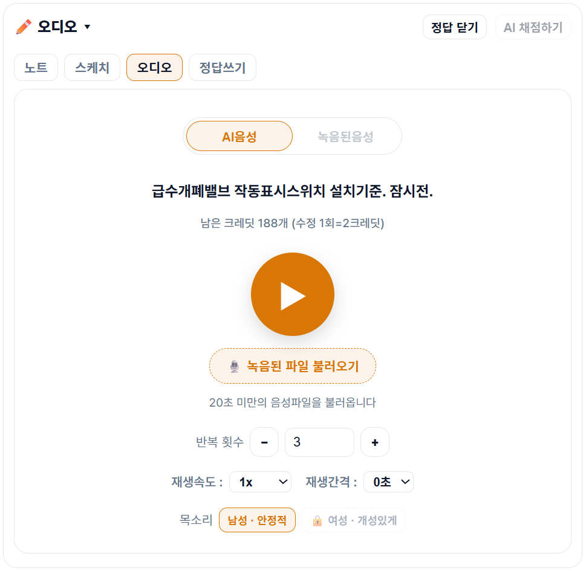
정답을 그대로 옮겨 적기보다, 낙서하듯 키워드·기호·선·그림을 직접 그리며 내용을 연결합니다. 손을 움직이며 떠올리는 과정을 반복 학습에 활용할 수 있습니다.
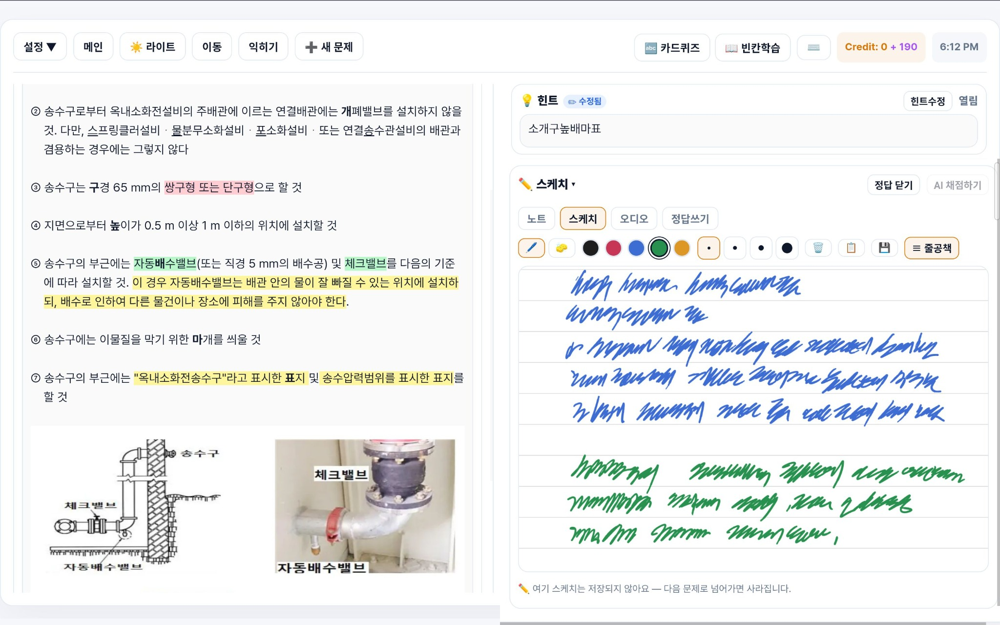
스케치에서 직접 그린 그림을 정답 편집에 넣고, 형광펜과 글자 굵기로 핵심 내용을 강조할 수 있습니다.
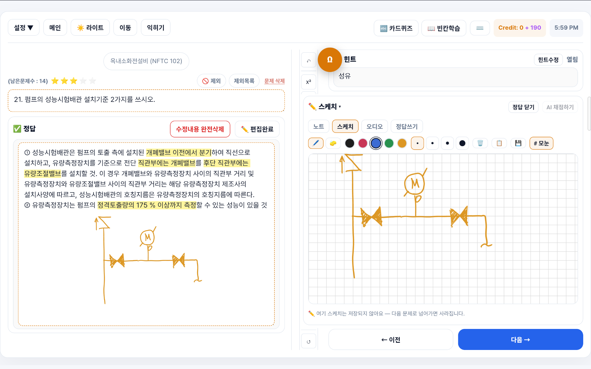
문제마다 중요도를 지정하고 우선순위를 필터링할 수 있습니다. 한 과목뿐 아니라 여러 과목을 하나의 묶음으로 만들어 순차 또는 랜덤으로 학습할 수 있습니다.
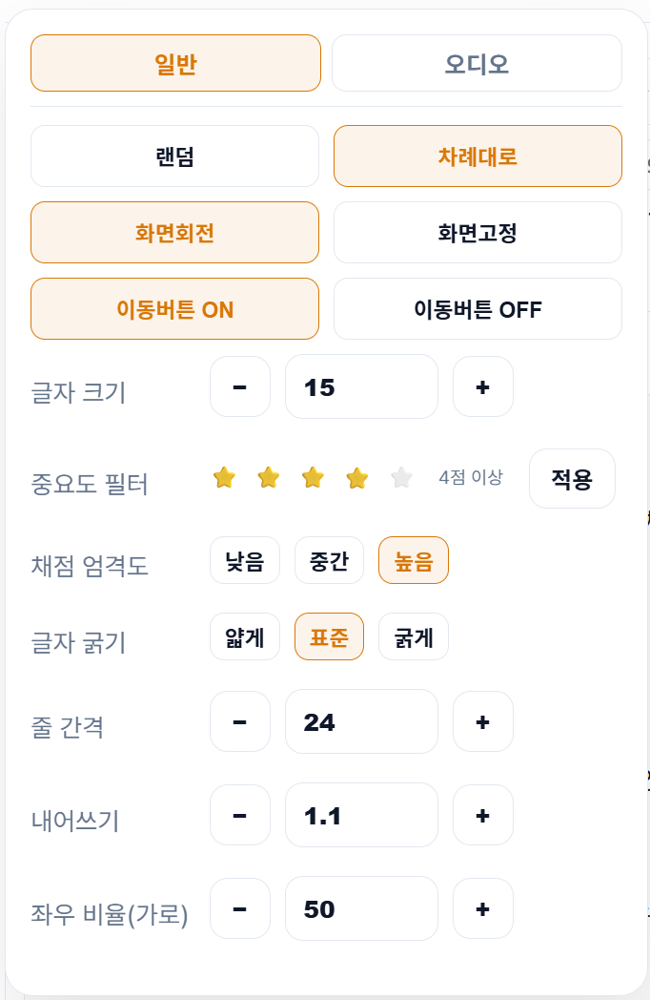
마이서브노트는 PWA 방식의 웹 앱입니다. 별도의 설치 파일 없이 브라우저에서 바로 사용할 수 있고, 홈 화면·Dock·바탕화면에 설치해 일반 앱처럼 실행할 수 있습니다.
원활한 이용을 위해 Chrome · Edge · Safari 최신 버전 사용을 권장합니다. 오래된 브라우저에서는 일부 기능이 정상적으로 작동하지 않을 수 있습니다.
※ Mac에서 Safari의 웹 앱 설치 기능을 사용하려면 macOS Sonoma 14 이상이 필요합니다.
브라우저에서 설치하는 PWA와 별도로 Android 전용 앱을 개발하고 있으며, Google Play 출시를 준비하고 있습니다.
Safari 웹 앱: macOS Sonoma 14 이상